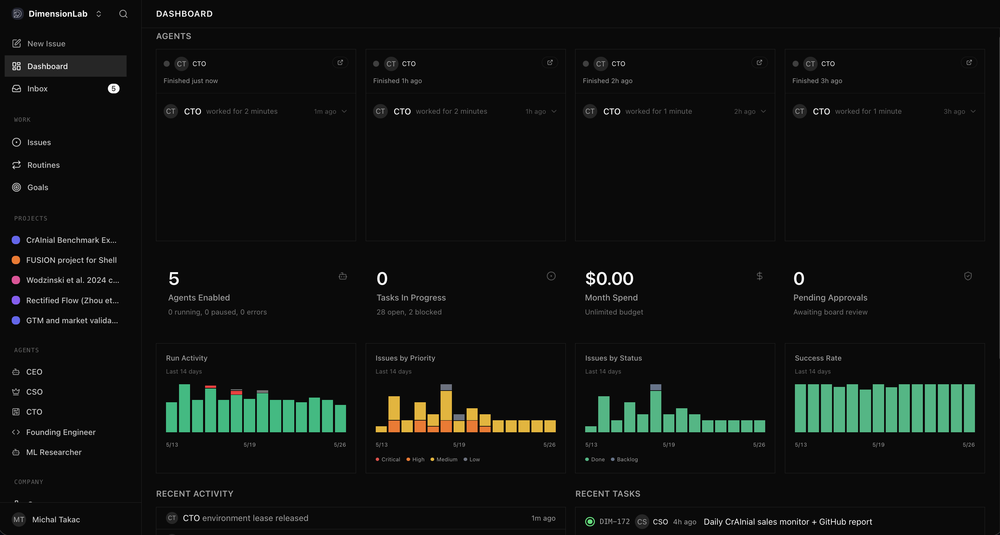
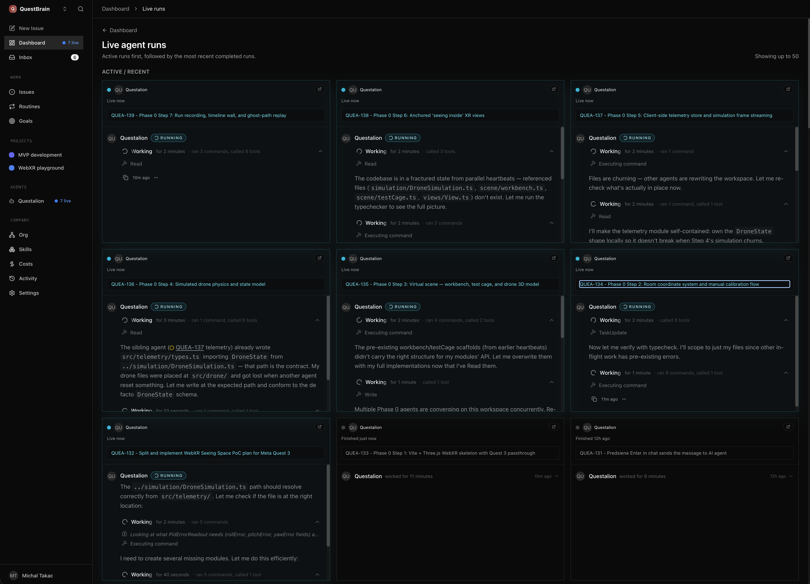

Paperclip as the control plane for agent-managed companies
Exact daily counts from local Paperclip backups, 2026-03-22 → 2026-05-25.
Human opens session, asks for help, reviews the result, closes session. The human owns the loop.
The system owns a delegated loop: perceives state, chooses actions, calls tools, records outcomes, resumes later, and escalates when needed.
Explicit objective, success criteria, budget, and owner.
Company knowledge, files, issues, messages, prior runs.
APIs, CLIs, browser, code execution, deployment, comms.
Permissions, approval gates, spend limits, safety rules.
Durable learning: facts, procedures, and audit trail.
Agents can use deterministic tools instead of hallucinating actions.
Claude Code / OpenCode / Codex-style CLIs can inspect repos, write code, run tests, and create PRs.
Skills, files, vector search, issue history, and persistent notes survive session resets.
Heartbeats, routines, cron jobs, queues, and background processes make agents asynchronous.
Tests, rubrics, audits, cost dashboards, and traces make autonomous work reviewable.
Many agents can run at once, cheaply enough to treat experiments as an organizational primitive.
Source summarized from YC Root Access: Tom Blomfield, “How to Build a Self-Improving Company with AI”, May 2026.
Email, support, Slack, product analytics, code, customer behavior.
What the agent may do, what needs approval, what must be logged.
DB queries, code edits, PRs, CRM updates, dashboards, payments, cloud.
Tests, evals, human approvals, review agents, spend controls.
Failures become new tools, better prompts, better policies, better procedures.
Two full-time humans, over $2M ARR, with an internal ops agent processing 100+ emails/day and closing 400+ support tickets.
Not a fixed workflow. When repeated work appears, the agent asks a coding sub-agent to create a new CLI/tool, permanently extending itself.
Factual memory, behavioral memory, and procedural memory — the same pattern Paperclip/Hermes represent as issues, audit trail, and skills.
Claude Code CLI wrapped in Python; messages from Slack/email go into a queue; the agent reads codebase and DB for business context.
Source summarized from YC Root Access: Ayush Garg, AnswerThis, “How to Build an Internal AI Agent That Evolves Itself”, May 2026.
Humans are the routers: meetings, managers, tickets, reminders, status updates.
Bottleneck: attention and coordination.
Agents are role-holders with goals, tools, budgets, routines, and audit trails. Humans steer policy and review high-risk decisions.
Bottleneck: quality gates and context plumbing.
Roles, hierarchy, adapter configuration, budgets, runtime instructions.
Issues, projects, goals, task status, assignees, runs, routines.
Audit trail, inbox, costs, approvals, permissions, logs.
Paperclip is less “one smart assistant” and more “operating system for a small AI-native organization.”


Search, interview, align incentives, onboard, manage calendar, accept limited parallelism.
Create role, reporting line, instruction file, model/adapter, budget, tools, work queue, and review policy.
In an agentic company, “hiring” becomes configuration, permissions, context, and observability.
Hermes already has tools, skills, persistent memory, cron jobs, subagents, web/browser access, and local server context. Paperclip gives it roles, budget, work queue, and auditability.
Another local/open agent runtime can sit behind the same organizational control plane if it exposes a stable adapter and run logs.
The key abstraction: Paperclip should not care which agent runtime executes the job, as long as it can configure, invoke, observe, and audit it.
External events arrive: email, chat, system alerts, user requests, webhook triggers.
Events become durable work with an owner, status, priority, comments, and links to runs.
Every mutation and result is logged: who/what acted, what changed, which run caused it.
Recurring autonomous loops: daily sales heartbeat, monitoring, inbox triage, research watch, reporting.
Longer arcs with goals and workspaces: CrAInial benchmark execution, QuestBrain MVP, QuestSpace portal, Graspable dev tooling.
CEO, CTO, Founding Engineer, ML Researcher, CSO, Support, Finance, Legal, Researcher, Sales.
Real catalog examples: Trail of Bits Security, K-Dense Science Lab, Donchitos Game Studio, Fullstack Forge, Product Compass Consulting, and GStack.
The reusable unit is no longer just a prompt or agent. It is an entire operating model.
Source: github.com/paperclipai/companies — 16 pre-built companies, 440+ agents, 500+ skills.
Shared procedures: PR workflow, customer support policy, data handling, deployment, experiment logging.
ML Researcher gets arXiv/HPC/evaluation; CSO gets CRM/outbound; CTO gets GitHub/devops.
Skill changes are code changes: reviewed, versioned, audited.
Derived from local Paperclip SQL backups: heartbeat_runs.usage_json/result_json and issue_comments author fields. Token totals are “observed in run metadata”, not a billing-system invoice.
Public URL: 0h.dimensionlab.org · company: DimensionLab · focus: CrAInial, bioengineering, sales.
Public URL: 0h.michaltakac.com · companies: QuestBrain, QuestSpace, Graspable, Agentic Consulting, Product Compass Consulting.
170 issues · 3691 runs · 1339 agent comments / 151 human
13 issues · 1423 runs · 99 agent comments / 18 human
17 issues · 22 runs · 25 agent comments / 1 human
40 issues · 120 runs · 104 agent comments / 6 human
13 issues · 24 runs · 23 agent comments / 1 human
144 issues · 330 runs · 326 agent comments / 93 human
Mike uses laptop, phone, Quest 3, browser, Telegram/SimpleX. Tailscale gives private reachability; public HTTPS domains expose the Paperclip dashboards when needed.
Reverse proxy routes 0h.dimensionlab.org and 0h.michaltakac.com to two isolated Paperclip app processes with separate ports, databases, JWT secrets, companies, and logs.
Each instance stores org charts, agents, issues, routines, comments, budgets, run logs, screenshots, and audit history — the company control plane.
Scoped Paperclip runs invoke Hermes adapters plus Claude Code / Codex-style coding CLIs. They bring skills, memory, shell/browser/API tools, MCP integrations, and repo access.
Design docs, vault notes, GitHub repos, screenshots, exported artifacts, and company templates become legible shared context for humans and agents.
Agents operate GitHub, RunPod H200 jobs, SLURM through autoresearch, web services, calendars, CRM, dashboards, and other business systems.
Any device → Tailscale / HTTPS → Hetzner Paperclip instances → scoped runs → Hermes + Claude Code / Codex → tools, repos, GPUs, services → audit trail back in Paperclip
Improve point-cloud diffusion and voxelization models for cranial implant generation, evaluated on DSC, 10mm bDSC, HD95, runtime, and GPU memory.
CEO agent creates direction, CTO/ML Researcher split experiments, agents run and monitor RunPod jobs on H200 GPUs, with SLURM used through autoresearch for scheduled training.
170 issues, 1514 comments, 3,691 runs, 1339 agent comments vs 151 human comments.
Baseline reproduction → architecture proposals → RunPod autoresearch → H200 training campaigns → final evaluation/packaging.
Agents read papers and repos, proposed architecture changes, then converted plans into repeatable experiment batches.
RunPod H200 jobs plus SLURM through autoresearch: submitted runs, monitored health, triaged failures, and kept experiment summaries in the audit trail.
Loss improved from early baselines toward sub-0.90 validation loss in the best reported runs: enough signal to justify deeper evaluation, packaging, and reproducibility checks.
Sampling/sweep work moved from slow exhaustive runs toward smaller validated batches.
Validation loss improved enough for agents to prioritize final evaluation over more blind search.
Autoresearch reused findings, killed bad branches earlier, and concentrated GPU spend on promising runs.
DimensionLab: ML experiments, HPC, papers, evaluation metrics, sales routines.
QuestSpace: member portal, onboarding UX, RFID agreements, presentation work.
Product Compass Consulting: ICPs, roadmap, GTM, final interactive reports.
Graspable: template improvements, teams functionality, RLS hardening.
Agentic Consulting: Cloudflare IaC, Stripe tests, calendars, sales/positioning.
QuestBrain: WebXR Seeing Space PoC, NotebookLM, SimpleX, Google Search grounding, live-chat tooling.
What decisions repeat? What inputs are needed? What outputs count as done?
Docs, Slack, CRM, code, finance, support, databases, calendars.
Read-only first, then low-risk write, then gated high-risk actions.
Tests, evals, dashboards, review queues, rollback plans.
Issues, runs, routines, budgets, logs, audit trail, escalation paths.
Human invokes AI manually. No persistent ownership.
Agent reads company context and produces reports with sources.
Agent drafts replies, issues, PRs, CRM updates; human approves.
Agent executes low-risk actions within budget and policy.
Agent updates tools, skills, prompts, and processes through review.
Multiple roles coordinate asynchronously; humans set strategy and governance.
Email, chat, webhooks, schedules, monitoring alerts, customer support, CRM, GitHub.
Docs, issue history, codebases, DB snapshots, transcripts, memories, skills, vector/keyword search.
Hermes, Claude Code, OpenClaw, shell, browser, APIs, MCP servers, cloud/GPU workers.
Secrets, permissions, sandboxing, approval gates, audit logs, spend and token accounting.
Test results, human comments, customer outcomes, eval scores, cost anomalies.
New skills, better tools, refined policies, reusable company templates.
Prompt injection, secret exfiltration, runaway spend, destructive tool calls, poisoned memory, bad autonomous emails, compliance leakage.
Least privilege, per-agent API keys, scoped JWTs, read-only defaults, spend caps, approval gates, immutable logs, sandboxed tools, human escalation.
Agentic organizations need security engineering before they need more agents.
Commercial platform positioning: run an entire company with agents; departments, managers, shared context, approvals, MCP/custom APIs.
Public social-media claims around a solo-founder, zero-employee, agentic company and $30M raise became a useful controversy: amazing if true, but auditability matters.
Great for agent task orchestration inside Hermes. Paperclip is more company-like: agents, org chart, budgets, audit, issues, routines.
Cofounder source: cofounder.co summary. Polsia source is social/search result only; present as “claims/controversy”, not verified fact.
Agentic company infrastructure should be inspectable, self-hostable, forkable, and auditable.
Issues, comments, runs, costs, and routines form a company memory that humans and agents can both read.
Hermes today, OpenClaw tomorrow, model/runtime changes later — the org model survives.
Reusable agentic org templates may become as important as reusable code libraries.
The winning companies will not just attach copilots to old org charts. They will make their knowledge legible, their processes executable, their agents accountable, and their loops self-improving.
82 system/other comments excluded from this ratio.